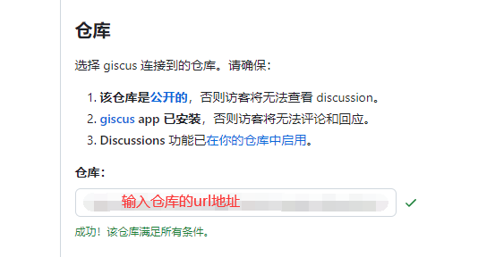

Github配置
登录github网站，找到自己要集成giscus的仓库。点击Settings，找到Discussions 。勾选复选框。
具体操作可参考官方文档。
Giscus配置
打开giscus网站。在仓库输入框中，输入指定仓库的url地址，如下图。

如果Github仓库已配置好，会提示该仓库满足所有条件。往下滚动,找到启用 giscus，会自动生成script代码。
<script src="https://giscus.app/client.js"
data-repo="owner/repo_name"
data-repo-id="R_key"
data-category="category_name"
data-category-id="DIC_key"
data-mapping="og:title"
data-strict="0"
data-reactions-enabled="1"
data-emit-metadata="0"
data-input-position="bottom"
data-theme="preferred_color_scheme"
data-lang="zh-CN"
crossorigin="anonymous"
async>
</script>
将script添加到你的网站中即可。
番外
一开始没发现giscus网站会自动帮忙生成好script代码，所以repo-id和category-id是用
Github Explorer手动查询的。具体可看隔壁。